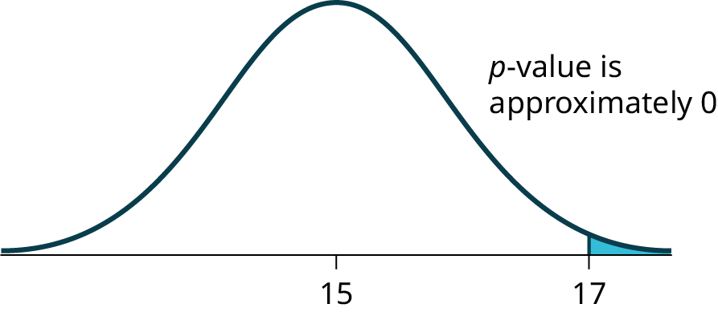

The original, as published: OpenStax, Introductory Statistics 2e, Illowsky, Dean, section 9.4 Rare Events, the Sample, Decision and Conclusion. © Rice University. CC BY-NC-SA 4.0, https://creativecommons.org/licenses/by-nc-sa/4.0/. Imported as published, from https://openstax.org/books/introductory-statistics-2e/pages/9-4-rare-events-the-sample-decision-and-conclusion
Establishing the type of distribution, sample size, and known or unknown standard deviation can help you figure out how to go about a hypothesis test. However, there are several other factors you should consider when working out a hypothesis test.
Suppose you make an assumption about a property of the population (this assumption is the null hypothesis). Then you gather sample data randomly. If the sample has properties that would be very unlikely to occur if the assumption is true, then you would conclude that your assumption about the population is probably incorrect. (Remember that your assumption is just an assumption—it is not a fact and it may or may not be true. But your sample data are real and the data are showing you a fact that seems to contradict your assumption.)
For example, Didi and Ali are at a birthday party of a very wealthy friend. They hurry to be first in line to grab a prize from a tall basket that they cannot see inside because they will be blindfolded. There are 200 plastic bubbles in the basket and Didi and Ali have been told that there is only one with a $100 bill. Didi is the first person to reach into the basket and pull out a bubble. Her bubble contains a $100 bill. The probability of this happening is = 0.005. Because this is so unlikely, Ali is hoping that what the two of them were told is wrong and there are more $100 bills in the basket. A "rare event" has occurred (Didi getting the $100 bill) so Ali doubts the assumption about only one $100 bill being in the basket.
Use the sample data to calculate the actual probability of getting the test result, called the p-value. The p-value is the probability that, if the null hypothesis is true, the results from another randomly selected sample will be as extreme or more extreme as the results obtained from the given sample.
A large p-value calculated from the data indicates that we should not reject the null hypothesis. The smaller the p-value, the more unlikely the outcome, and the stronger the evidence is against the null hypothesis. We would reject the null hypothesis if the evidence is strongly against it.
Draw a graph that shows the p-value. The hypothesis test is easier to perform if you use a graph because you see the problem more clearly.
Suppose a baker claims that his bread height is more than 15 cm, on average. Several of his customers do not believe him. To persuade his customers that he is right, the baker decides to do a hypothesis test. He bakes 10 loaves of bread. The mean height of the sample loaves is 17 cm. The baker knows from baking hundreds of loaves of bread that the standard deviation for the height is 0.5 cm. and the distribution of heights is normal.
The null hypothesis could be H0: μ ≤ 15 The alternate hypothesis is Ha: μ > 15
The words "is more than" translates as a ">" so "μ > 15" goes into the alternate hypothesis. The null hypothesis must contradict the alternate hypothesis.
By the Central Limit Theorem, the distribution of sample means, for samples of 10 loaves, will be normal with mean μ = 15 and standard deviation .
Suppose the null hypothesis is true (the mean height of the loaves is no more than 15 cm). Then is the mean height (17 cm) calculated from the sample unexpectedly large? The hypothesis test works by asking the question how unlikely the sample mean would be if the null hypothesis were true. The graph shows how far out the sample mean is on the normal curve. The p-value is the probability that, if we were to take other samples, any other sample mean would fall at least as far out as 17 cm.
The p-value, then, is the probability that a sample mean is the same or greater than 17 cm. when the population mean is, in fact, 15 cm. We can calculate this probability using the normal distribution for means.

p-value= P( > 17) which is approximately zero.
A p-value of approximately zero tells us that it is highly unlikely that a loaf of bread rises no more than 15 cm, on average. That is, almost 0% of all loaves of bread would be at least as high as 17 cm. purely by CHANCE had the population mean height really been 15 cm. Because the outcome of 17 cm. is so unlikely (meaning it is happening NOT by chance alone), we conclude that the evidence is strongly against the null hypothesis (the mean height is at most 15 cm.). There is sufficient evidence that the true mean height for the population of the baker's loaves of bread is greater than 15 cm.
A normal distribution has a standard deviation of 1. We want to verify a claim that the mean is greater than 12. A sample of 36 is taken with a sample mean of 12.5.
H0: μ ≤ 12
Ha: μ > 12
The p-value is 0.0013
Draw a graph that shows the p-value.
A systematic way to make a decision of whether to reject or not reject the null hypothesis is to compare the p-value and a preset or preconceived α (also called a "significance level"). A preset α is the probability of a Type I error (rejecting the null hypothesis when the null hypothesis is true). It may or may not be given to you at the beginning of the problem.
When you make a decision to reject or not reject H0, do as follows:
Conclusion: After you make your decision, write a thoughtful conclusion about the hypotheses in terms of the given problem.
When using the p-value to evaluate a hypothesis test, it is sometimes useful to use the following memory device
If the p-value is low, the null must go.
If the p-value is high, the null must fly.
This memory aid relates a p-value less than the established alpha (the p is low) as rejecting the null hypothesis and, likewise, relates a p-value higher than the established alpha (the p is high) as not rejecting the null hypothesis.
Fill in the blanks.
Reject the null hypothesis when ______________________________________.
The results of the sample data _____________________________________.
Do not reject the null when hypothesis when __________________________________________.
The results of the sample data ____________________________________________.
Reject the null hypothesis when the p-value is less than the established alpha value. The results of the sample data support the alternative hypothesis.
Do not reject the null hypothesis when the p-value is greater than the established alpha value. The results of the sample data do not support the alternative hypothesis.
It’s a Boy Genetics Labs claim their procedures improve the chances of a boy being born. The results for a test of a single population proportion are as follows:
H0: p = 0.50, Ha: p > 0.50
α = 0.01
p-value = 0.025
Interpret the results and state a conclusion in simple, non-technical terms.
When the probability of an event occurring is low, and it happens, it is called a rare event. Rare events are important to consider in hypothesis testing because they can inform your willingness not to reject or to reject a null hypothesis. To test a null hypothesis, find the p-value for the sample data and graph the results. When deciding whether or not to reject the null the hypothesis, keep these two parameters in mind:
When do you reject the null hypothesis?
The probability of winning the grand prize at a particular carnival game is 0.005. Is the outcome of winning very likely or very unlikely?
The outcome of winning is very unlikely.
The probability of winning the grand prize at a particular carnival game is 0.005. Michele wins the grand prize. Is this considered a rare or common event? Why?
It is believed that the mean height of high school students who play basketball on the school team is 73 inches with a standard deviation of 1.8 inches. A random sample of 40 players is chosen. The sample mean was 71 inches, and the sample standard deviation was 1.5 inches. Do the data support the claim that the mean height is less than 73 inches? The p-value is almost zero. State the null and alternative hypotheses and interpret the p-value.
H0: μ > = 73
Ha: μ < 73
The p-value is almost zero, which means there is sufficient data to conclude that the mean height of high school students who play basketball on the school team is less than 73 inches at the 5% level. The data do support the claim.
The mean age of graduate students at a University is at most 31 y ears with a standard deviation of two years. A random sample of 15 graduate students is taken. The sample mean is 32 years and the sample standard deviation is three years. Are the data significant at the 1% level? The p-value is 0.0264. State the null and alternative hypotheses and interpret the p-value.
Does the shaded region represent a low or a high p-value compared to a level of significance of 1%?
The shaded region shows a low p-value.
What should you do when α > p-value?
What should you do if α = p-value?
Do not reject H0.
If you do not reject the null hypothesis, then it must be true. Is this statement correct? State why or why not in complete sentences.
Use the following information to answer the next seven exercises: Suppose that a recent article stated that the mean time spent in jail by a first-time convicted burglar is 2.5 years. A study was then done to see if the mean time has increased in the new century. A random sample of 26 first-time convicted burglars in a recent year was picked. The mean length of time in jail from the survey was three years with a standard deviation of 1.8 years. Suppose that it is somehow known that the population standard deviation is 1.5. Conduct a hypothesis test to determine if the mean length of jail time has increased. Assume the distribution of the jail times is approximately normal.
Is this a test of means or proportions?
means
What symbol represents the random variable for this test?
In words, define the random variable for this test.
the mean time spent in jail for 26 first time convicted burglars
Is σ known and, if so, what is it?
Calculate the following:
Since both σ and are given, which should be used? In one to two complete sentences, explain why.
State the distribution to use for the hypothesis test.
A random survey of 75 student loan recipients revealed that the mean length of time in repayment is 17.4 years with a standard deviation of 6.3 years. Conduct a hypothesis test to determine if the population mean time in repayment could likely be 15 years.
The National Institute of Mental Health published an article stating that in any one-year period, approximately 9.5% of American adults suffer from depression or a depressive illness. Suppose that in a survey of 100 people in a certain town, seven of them suffered from depression or a depressive illness. Conduct a hypothesis test to determine if the true proportion of people in that town suffering from depression or a depressive illness is lower than the percent in the general adult American population.
Level of Significance of the Test probability of a Type I error (reject the null hypothesis when it is true). Notation: α. In hypothesis testing, the Level of Significance is called the preconceived α or the preset α.
p-value the probability that an event will happen purely by chance assuming the null hypothesis is true. The smaller the p-value, the stronger the evidence is against the null hypothesis.